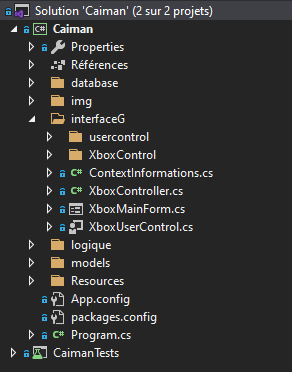
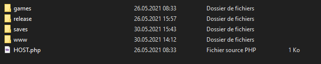
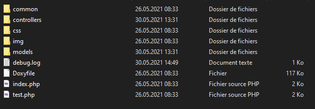
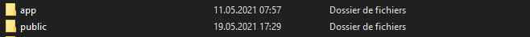
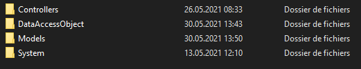

Analyse organique¶
Technologies utilisées¶
HTML¶
CSS¶
PHP¶
J’ai utilisé le php pour le site web de Caiman ainsi que pour l’API.
C#¶
L’application Caiman a été développé en C#, j’ai utilisé les paquets suivants:
Microsoft.ASPNet.WEbApi.Client
Newtonsoft.Json
SharpDX
Architecture du projet¶
Le projet se divise en 3 parties: l’application Caiman pour windows, le site web et l’API. Chaque partie du projet contient une documentation doxygene qui lui est propre.
Caiman¶
Je vais expliquer ci-dessous l’arborescence des fichiers de l’application Caiman et comment les émulateurs y sont intégrés.

Je vais expliquer ce que contiennent les différents dossiers.
Database
Contient les classes servant à appeler la base de données.
interfaceG
Ce dossier contient les fichiers de base de l’affichage.
interfaceG\usercontrol
Ce dossier contient les différents panels qui sont utilisés dans Caiman pour créer l’affichage.
interfaceG\XboxControl
Ce dossier contient une version modifiée de plusieurs contrôles de base de Windows Form.
logique
Ce dossier contient les classes servant à gérer les émulateurs et les sauvegardes et plus généralement toute la logique de l’application.
models
Ce dossier contient les modèles pour simplifier l’interaction entre la base de données et Caiman.
emulators
Le dossier est bien présent mais n’est pas visible sur la photo. Ce dossier contient tous les fichiers des émulateurs.
Site web¶
Le site web contient en plus des fichiers du site les fichiers des jeux et des sauvegardes des utilisateurs.

games
Ce dossier contient dans un sous dossier spécifique à chaque émulateur les fichiers des jeux.
release
Ce dossier contient le fichier .zip de la version téléchargeable de Caiman depuis le site.
saves
Ce dossier contient les fichiers de sauvegardes des utilisateurs.
www
Ce dossier contient les fichiers du site web de Caiman.

common
Ce dossier contient les fichiers de base de la vue comme le footer ou le header.
controllers
Ce dossier contient les différents controllers de l’application.
css
contient les fichiers de css
img
contient les images des jeux
models
contient les fichiers pour simplifier l’accès à la base de données
API¶

Le dossier de base de l’api contient deux dossiers importants .
app¶

Controllers
Ce dossier contient les différents controllers de l’API.
DataAccessObject
Ce dossier contient les différents fichiers servant à exécuter des requêtes à la base de données.
Models
Ce dossier contient les modèles utilisés par l’API.
System
Ce dossier contient des fichiers servant à se connecter à la base de données.
public¶
Je ne vais pas développer davantage sur le contenu du dossier, en sachant que le détail des différents endpoint est disponible dans la documentation. Néaumoins, ce dossier comporte les points d’accès de l’API.